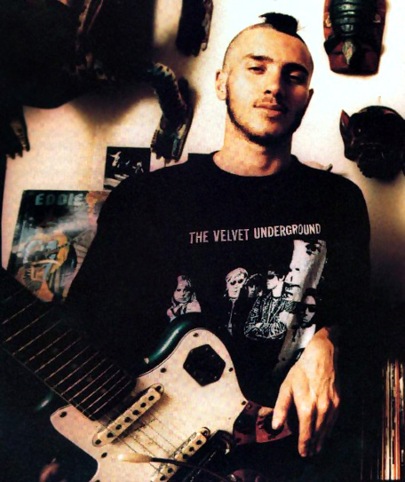
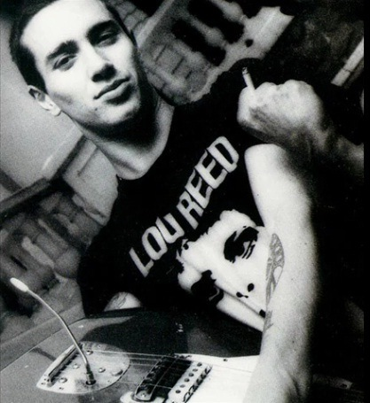

Jak podaje internetowa wersja magazynu Rolling Stone, dziś w Nowym Jorku zmarł w wieku 71 lat Lou Reed. Ten wokalista, poeta, kompozytor i gitarzysta uznawany jest za jednego z najważniejszych twórców muzyki rockowej.
Urodził się w Nowym Jorku i to miasto zajmowało szczególne miejsce w jego twórczości: wielokrotnie opisywał mroczną stronę miasta zaludnioną przez narkomanów, dealerów, transwestytów, prostytutki. Na scenę wychodził przez ponad 50 lat – zarówno solo, jak i z różnymi zespołami, wśród których na szczególną uwagę zasługuje z pewnością stworzony pod koniec lat 60. i związany z kręgiem Andy`ego Warhola Velvet Underground.

Jego znakami rozpoznawczymi były niski, chropawy głos, mocne gitarowe riffy i poetyckie, choć nie stroniące od pokazywania mrocznych zakamarków ludzkiej duszy teksty. W swoich piosenkach opowiadał o narkotykach, seksie i przemocy w sposób niespotykany wcześniej i niezwykle śmiały. Wielu szokował, ale stworzył unikalny styl, który zainspirował wielu muzyków na świecie – między innymi także Johna Frusciante, który wielokrotnie wskazywał Lou Reeda oraz Velvet Underground jako swoich ulubieńców.
Brian Eno powiedział kiedyś, chcąc podkreślić wyjątkowy status tego zespołu, że choć pierwszą płytę Velvet Underground kupiło tylko 30 tys. osób gdy się ukazała po raz pierwszy, to każda z tych osób założyła własny zespół.
Lou Reed nagrał solo 23 płyty, z których najbardziej znane są: wyprodukowany przez Davida Boviego „Transformer”, mroczny „Berlin” oraz gitarowy „New York”. Jego ostatnim wydawnictwem była nagrana wraz z Metallicą płyta „Lulu” z 2011 roku.

John Frusciante bardzo często wymieniał Lou Reeda jako jednego ze swoich muzycznych idoli – szczególnie fascynował go chyba w czasach nagrywania Blood Sugar Sex Magic, gdyż na zdjęciach z tamtego okresu często nosi koszulki z jego podobizną. W 2004 roku na pytanie fana o artystów, w których muzyce za każdym przesłuchaniem można odkryć coś nowego odpowiedział: „Ludzie, którzy przychodzą mi na myśl w tym momencie to Mark Bolan z T. Rex, Lou Reed, David Bowie, Iggy Pop. Ich muzyka zachwyciła mnie gdy byłem dzieciakiem i ciągle mogę z niej wyciągnąć jakieś nowe rzeczy.” Z kolei pytany o ulubione płyty przez Guya Oseary na potrzeby książki „On the record” powiedział, że wszystkie płyty Velvet Underground kocha jednakowo, a jako jedną ze swoich ulubionych piosenek wymienił “Ride into the Sun,” Lou Reeda. Na koncertach wykonywał covery piosenek Lou Reeda i Vel vet Underground m.in. „Perfect Day”, „Sweet Jane”.